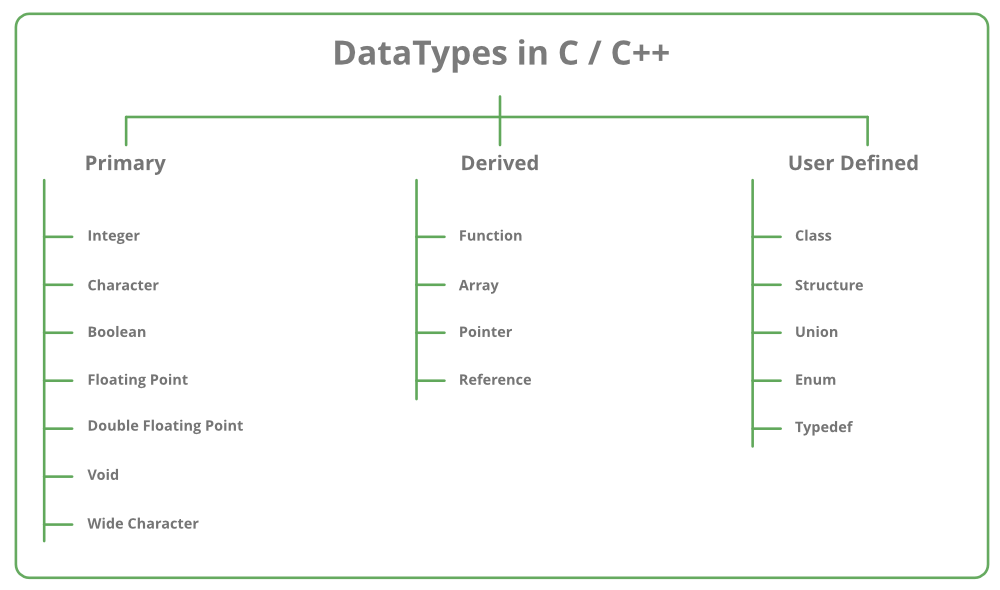
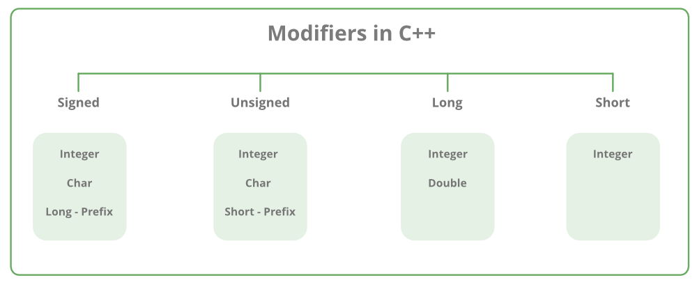
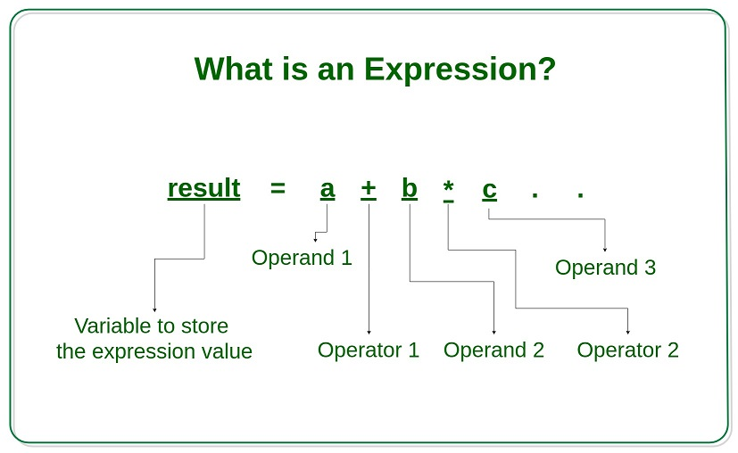
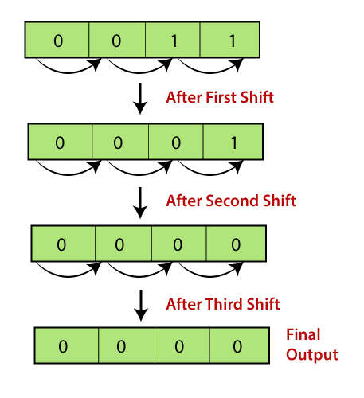
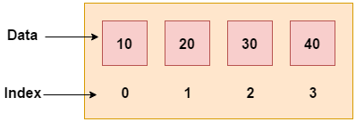
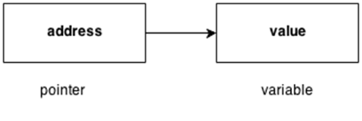
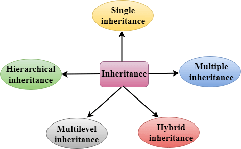
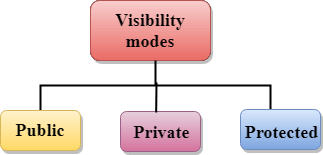
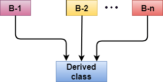

Dr. M. Kamakshaiah is a open source software evangelist, full stack developer and academic of data science and anaytics. His teaching interests are IT practices in business, MIS, Data Science, Business Analytics including functional analytics related to marketing, finance, and HRM, quality and operations. He also teaches theoretical concepts like statistical diagnosis, multivariate analytics, numerical simulations & optimization, machine learning & AI, IoT using few programming languages like R, Python, Java and more.
His research interests are related to few domains such as healthcare, education, food & agriculture, open source software and etc. He has taught abroad for two years and credits two country visits. He has developed few free and open source software solutions meant for corporate practitioners, academics, scholars and students engaging in data science and analytics. All his software applications are available from his GITHUB portal https://github.com/Kamakshaiah.
This book is a result of my teaching necessity. The necessity arose out of dearth of good text book meant for students in business management stream. There are books on C++ but not sufficient enough to address my class room needs. Most of the students in my classes don’t have much of programming background and needs exposure to the same having no compromise on coding.
This text book has five chapters each with a unique goal. This book caters to the needs of both beginners and mavericks. The first chapter deals with introduction to C++ such as history, design principles, few essential components and more. Second chapter deals with few concepts related to code blocks such as data types, operators with related examples. Third chapter deals with control flow consisting code blocks related to conditional statements and loops. The fourth chapter deals with various aspects of Object Oriented Programming (OOP). The last chapter has few code snippets which demonstrates exception handling using C++ in-build methods.
Most of the examples or code blocks are related to data science and analytics such as arithmetic calculations, less intensive numerical analysis etc., so that even a beginner could pick up content without a doubt. There are few code blocks that are brainy and requires sufficient understanding on core statistics such as statistical tests, methods and modes so on.
Happy reading ...
Author
Dr. M. Kamakshaiah
C++ is a general purpose, case-sensitive, free-form programming language that supports object-oriented, procedural and generic programming. C++ is a middle-level language, as it encapsulates both high and low level language features. C++ supports the object-oriented programming, the four major pillar of object-oriented programming (OOPs) used in C++ are:
Inheritance
Polymorphism
Encapsulation
Abstraction
Standard C++ programming is divided into three important parts:
The core library includes the data types, variables and literals, etc.
The standard library includes the set of functions manipulating strings, files, etc.
The Standard Template Library (STL) includes the set of methods manipulating a data structure.
By the help of C++ programming language, we can develop different types of secured and robust applications:
Window application
Client-Server application
Device drivers
Embedded firmware etc
C++ Example Program
#include <iostream>
using namespace std;
int main() {
cout << "Hello C++ Programming";
return 0;
}
The above program has the sample code that prints a statement Hello C++ Programming. The keyword include is a C++ keyword which deals with imports. In this program this keyword import one core library called iostream. The second statement deals with namespace, which is a common concept in programming. Every program depends on two very important environmental requirements viz., workspace, namespace. The other keyword cout is std command, which takes care of printing output. The last statement return 0, is required to tell C++ compiler as what is being returned by the method (main, in this case). We will discuss about all these statements in detail through forthcoming sections in this book.
C is a structural or procedural oriented programming language which is machine-independent and extensively used in various applications. C is the basic programming language that can be used to develop from the operating systems (like Windows) to complex programs like Oracle database, Git, Python interpreter, and many more. C programming language can be called a god’s programming language as it forms the base for other programming languages. If we know the C language, then we can easily learn other programming languages. C language was developed by the great computer scientist Dennis Ritchie at the Bell Laboratories. It contains some additional features that make it unique from other programming languages.
C++ is a special-purpose programming language developed by Bjarne Stroustrup at Bell Labs circa 1980. C++ language is very similar to C language, and it is so compatible with C that it can run of C programs without changing any source of code though C++ is an object-oriented programming language, so it is safer and well-structured programming language than C.
The following are the differences between C and C++:
Definition: C is a structural programming language, and it does not support classes and objects, while C++ is an object-oriented programming language that supports the concept of classes and objects.
Type of programming language: C supports the structural programming language where the code is checked line by line, while C++ is an object-oriented programming language that supports the concept of classes and objects.
Developer of the language: Dennis Ritchie developed C language at Bell Laboratories while Bjarne Stroustrup developed the C++ language at Bell Labs circa 1980.
Subset: C++ is a superset of C programming language. C++ can run of C code but C language cannot run C++ code.
Type of approach: C follows the top-down approach, while C++ follows the bottom-up approach. The top-down approach breaks the main modules into tasks; these tasks are broken into sub-tasks, and so on. The bottom-down approach develops the lower level modules first and then the next level modules.
Security: In C, the data can be easily manipulated by the outsiders as it does not support the encapsulation and information hiding while C++ is a very secure language, i.e., no outsiders can manipulate its data as it supports both encapsulation and data hiding. In C language, functions and data are the free entities, and in C++ language, all the functions and data are encapsulated in the form of objects.
Function Overloading: Function overloading is a feature that allows you to have more than one function with the same name but varies in the parameters. C does not support the function overloading, while C++ supports the function overloading.
Function Overriding: Function overriding is a feature that provides the specific implementation to the function, which is already defined in the base class. C does not support the function overriding, while C++ supports the function overriding.
Reference variables: C does not support the reference variables, while C++ supports the reference variables.
Keywords: C contains 32 keywords, and C++ supports 52 keywords.
Namespace feature: A namespace is a feature that groups the entities like classes, objects, and functions under some specific name. C does not contain the namespace feature, while C++ supports the namespace feature that avoids the name collisions.
Exception handling: C does not provide direct support to the exception handling; it needs to use functions that support exception handling. C++ provides direct support to exception handling by using a try-catch block.
Input/Output functions: In C, scanf and printf functions are used for input and output operations, respectively, while in C++, cin and cout are used for input and output operations, respectively.
Memory allocation and de-allocation: C supports calloc() and malloc() functions for the memory allocation, and free() function for the memory de-allocation. C++ supports a new operator for the memory allocation and delete operator for the memory de-allocation.
Inheritance: Inheritance is a feature that allows the child class to reuse the properties of the parent class. C language does not support the inheritance while C++ supports the inheritance.
Header file: C program uses <stdio.h> header file while C++ program uses <iostream.h> header file.
History of C++ language is interesting to know. Here we are going to discuss brief history of C++ language. C++ programming language was developed in 1980 by Bjarne Stroustrup at bell laboratories of ATT (American Telephone Telegraph), located in U.S.A. Bjarne Stroustrup is known as the founder of C++ language. It was develop for adding a feature of OOP (Object Oriented Programming) in C without significantly changing the C component. C++ programming is “relative” (called a superset) of C, it means any valid C program is also a valid C++ program. programming languages that were developed before C++ language.
| Language | Year | Developed By |
| Algol | 1960 | International Group |
| BCPL | 1967 | Martin Richard |
| B | 1970 | Ken Thompson |
| Traditional C | 1972 | Dennis Ritchie |
| K & R C | 1978 | Kernighan & Dennis Ritchie |
C++ is object oriented programming language. It provides a lot of features that are given below.
Simple: C++ is a simple language in the sense that it provides structured approach (to break the problem into parts), rich set of library functions, data types etc.
Machine Independent or Portable: Unlike assembly language, c programs can be executed in many machines with little bit or no change. But it is not platform-independent.
Mid-level programming language: C++ is also used to do low level programming. It is used to develop system applications such as kernel, driver etc. It also supports the feature of high level language. That is why it is known as mid-level language.
Structured programming language: C++ is a structured programming language in the sense that we can break the program into parts using functions. So, it is easy to understand and modify.
Rich Library: C++ provides a lot of inbuilt functions that makes the development fast.
Memory Management: It supports the feature of dynamic memory allocation. In C++ language, we can free the allocated memory at any time by calling the free() function.
Speed: The compilation and execution time of C++ language is fast.
Pointer: C++ provides the feature of pointers. We can directly interact with the memory by using the pointers. We can use pointers for memory, structures, functions, array etc.
Recursion: In C++, we can call the function within the function. It provides code reusability for every function.
Extensible: C++ language is extensible because it can easily adopt new features.
Object Oriented: C++ is object oriented programming language. OOPs makes development and maintenance easier where as in Procedure-oriented programming language it is not easy to manage if code grows as project size grows.
Compiler based: C++ is a compiler based programming language, it means without compilation no C++ program can be executed. First we need to compile our program using compiler and then we can execute our program.
There are number of ways to install and work with C++. Following are few ways:
Using CLI. 1
POSIX-like run-time environments such as CygWin & MinGW. 2 3
Third party Integrated Development Environments (IDEs). Example: Dev-C++ 4
Install C and C++ support in Visual Studio. 5
C/C++ for Visual Studio Code. 6
C++ on Eclipse in Windows. 7
I suggest and will be using the last method among all the above methods for it is consistent for many reasons. One of the potential reasons is that Eclipse is an editor for many languages and also support few platforms such as mobile, desktop, web, IoT, etc. So using Eclipse always offers rather more mileage over other methods and editors.
Eclipse is an integrated development environment (IDE) used in computer programming. It contains a base workspace and an extensible plug-in system for customizing the environment. Eclipse is written mostly in Java and its primary use is for developing Java applications, but it may also be used to develop applications in other programming languages via plug-ins, including Ada, ABAP, C, C++, C#, Clojure, COBOL, D, Erlang, Fortran, Groovy, Haskell, JavaScript, Julia, Lasso, Lua, Perl, PHP, Prolog, Python, R, Ruby (including Ruby on Rails framework), Rust, Scala, and Scheme. It can also be used to develop documents with LaTeX and packages for the software Mathematica. Development environments include the Eclipse Java development tools (JDT) for Java and Scala, Eclipse CDT for C/C++, and Eclipse PDT for PHP, among others.
To use Eclipse for C/C++ programming, you need a C/C++ compiler. On Windows, you could install either MinGW GCC or Cygwin GCC. Choose MinGW if you are not sure, because MinGW is lighter and easier to install, but has fewer features.
To install MinGW, go to the MinGW homepage, www.mingw.org, and follow the link to the MinGW download page. Download the latest version of the MinGW installation program which should be named MinGWversion.exe. While installing MinGW, at a minimum, you must install gcc-core, gcc-g++, binutils, and the MinGW runtime, but you may wish to install more. Add the bin subdirectory of your MinGW installation to your PATH environment variable so that you can specify these tools on the command line by their simple names.
There are two ways to install CDT, depending on whether you have previously installed an Eclipse. If you have already installed “Eclipse for Java Developers” or other Eclipse packages, you could install the CDT plug-in as follows.
Launch Eclipse - Help - Install New Software - In “Work with” field, pull down the drop-down menu and select “Kepler - http://download.eclipse.org/releases/kepler” (or juno for Eclipse 4.2; or helios for Eclipse 3.7).
In “Name” box, expand “Programming Language” node - Check “C/C++ Development Tools” - “Next” - ... - “Finish”.
If you have not install any Eclipse package, you could download “Eclipse IDE for C/C++ Developers” from http://www.eclipse.org/downloads, and unzip the downloaded file into a directory of your choice.
Eclipse has perspectives, this means Eclipse base IDE can be made convenient for a given run-time environment. If you have installed Eclipse CDT (C++ Development Tooling), then you probably don’t need to switch between perspectives. If you working with multiple run-times then probably you need to switch between perspectives in Eclipse. There are many ways to switch perspectives in Eclipse.
Windows short-cut key combination is Ctl+F8.
There is perspectives button at right upper corner of the Eclipse toolbar.
Using Eclipse main menu: Window - Perspectives - Open Perspective - Other: C++
Once, you are in CDT perspective then go to File - Create Project. After finishing necessary formalities like naming folders/files and selecting proper locations for these folders and files, you may find a folder created at left file explorers windows inside Eclipse. Right click on the main (or project home) directory, select New - “Source File”. Try to save the file with .cpp format. Now you are literally ready for C++ development. 8
First let us understand as how to compile and run C++ files from terminal. Create a nice place, you may call it as workspace, as every programming language need to have certain workspace and namespace for running their code. At times, it can be a simple folder in which we are going to organize our scripts. In my computer I created one such folder and it looks like the one below:
D:\Work\Books\CPP\scripts>dir Volume in drive D is Data Volume Serial Number is 0C88-924D Directory of D:\Work\Books\CPP\scripts 24-10-2021 18:20 <DIR> . 24-10-2021 18:20 <DIR> .. 24-10-2021 18:19 0 demo.cpp 1 File(s) 0 bytes 2 Dir(s) 659,893,870,592 bytes free D:\Work\Books\CPP\scripts>
D: is the workspace for my C++ programs. If you see I have one file with name demo.cpp. This is the file in which I am going to write C++ program. Let’s try the following code snippet in plain text file in Windows known as Notepad.
#include <iostream>
using namespace std;
int main(){
cout << "Hello World!" << endl;
cout << "This is first C++ program.";
return 0;
}
Now in the terminal use the following statement to compile this program.
g++ demo.cpp
This shall produce the following changes in the same directory.
D:\Work\Books\CPP\scripts>dir Volume in drive D is Data Volume Serial Number is 0C88-924D Directory of D:\Work\Books\CPP\scripts 24-10-2021 18:25 <DIR> . 24-10-2021 18:25 <DIR> .. 24-10-2021 18:25 56,932 a.exe 24-10-2021 18:24 147 demo.cpp 2 File(s) 57,079 bytes 2 Dir(s) 659,893,624,832 bytes free
A new file a.exe is produced which is an Windows executable file. Now if you run a.exe in the terminal it shall produce the output.
D:\Work\Books\CPP\scripts>a.exe Hello World! This is first C++ program.
As far as compiling is concerned, there are number of ways to compile a C++ program into variety of output formats.
g++ -S: generates a file_name.s known as assembly source file.
g++ -c: generates a file_name.o object code file in present working directory.
g++ -o/exe: generates executable target file with target_name (or a.out by default).
Suppose I want to compile to an output file with a given name. I need to execute the same statement with few changes shown as below.
g++ -o main.exe demo.cpp
This will create main.exe in the same filder/directory.
Object code is highly useful to compile and link multiple files. I want to plan my project as below:
Create a header (.h) file with method definitions (helloworld.h).
Define the method (helloworld.cpp).
Invoke the method from main file (hello.cpp).
So I am planning my project with one header file and two cpp files. Keep all the files in the same directory. The code inside these files is going to be as below:
// hello.cpp file
#include "helloWorld.h"
#include <iostream>
int main()
{
std::cout << "This is \n";
helloWorld();
std::cout << "greeting";
return 0;
}
// helloWorld.cpp file
#include <iostream>
void helloWorld()
{
std::cout << "Hello World\n";
}
// helloWorld.h file
void helloWorld();
Now run the following statements in the terminal.
g++ -c helloWorld.cpp hello.cpp g++ -o main.exe hello.o helloworld.o
This shall produce executable file with name main.exe, which can produce the below output.
This is Hello World greeting
In the main menu go to File - New and create Source File, but save the file with .cpp extension. This can also be done by right clicking project directory. Eclipse will display a file which is just a normal text file but with .cpp extension. Write the following code in it.
#include <iostream>
using namespace std;
int main(){
cout << "Hello World!" << endl;
cout << "This is first C++ program.";
return 0;
}
Go to Project - Build All (Ctl + B). This action shall produce a couple of additional folders and files in those folder. Now go to Run - Run As - Local C/C++ Application (Ctl + F11). This shall produce the following output in the Eclipse Console.
Hello World! This is first C++ program.
C++ I/O operation is using the stream concept. Stream is the sequence of bytes or flow of data. It makes the performance fast. If bytes flow from main memory to device like printer, display screen, or a network connection, etc, this is called as output operation. If bytes flow from device like printer, display screen, or a network connection, etc to main memory, this is called as input operation.
Let us see the common header files used in C++ programming are:
include<stdio.h>: It is used to perform input and output operations using functions scanf() and printf().
include<iostream>: It is used as a stream of Input and Output using cin and cout.
include<string.h>: It is used to perform various features related to string manipulation like strlen(), strcmp(), strcpy(), size(), etc.
include<math.h>: It is used to perform mathematical operations like sqrt(), log2(), pow(), etc.
include<iomanip.h>: It is used to access setw() and setprecision() function to limit the decimal places in variables.
include<signal.h>: It is used to perform signal handling functions like signal() and raise().
include<stdarg.h>:It is used to perform standard argument functions like va_start() and va_arg(). It is also used to indicate start of the variable-length argument list and to fetch the arguments from the variable-length argument list in the program respectively.
include<errno.h>: It is used to perform error handling operations like errno(), strerror(), perror(), etc.
include<fstream.h>: It is used to control the data to read from a file as an input and data to write into the file as an output.
include<time.h>: It is used to perform functions related to date() and time() like setdate() and getdate(). It is also used to modify the system date and get the CPU time respectively.
include<float.h>: It contains a set of various platform-dependent constants related to floating point values. These constants are proposed by ANSI C. They allow making programs more portable. Some examples of constants included in this header file are- e(exponent), b(base/radix), etc.
include<limits.h>: It determines various properties of the various variable types. The macros defined in this header, limits the values of various variable types like char, int, and long. These limits specify that a variable cannot store any value beyond these limits, for example an unsigned character can store up to a maximum value of 255.
The cout is a predefined object of ostream class. It is connected with the standard output device, which is usually a display screen. The cout is used in conjunction with stream insertion operator () to display the output on a console. Let’s see the simple example of standard output stream (cout):
#include <iostream>
using namespace std;
int main( ) {
char ary[] = "Welcome to C++ tutorial";
cout << "Value of ary is: " << ary << endl;
}
Output:
Value of ary is: Welcome to C++ tutorial
The cin is a predefined object of istream class. It is connected with the standard input device, which is usually a keyboard. The cin is used in conjunction with stream extraction operator () to read the input from a console. Let’s see the simple example of standard input stream (cin):
#include <iostream>
using namespace std;
int main( ) {
int age;
cout << "Enter your age: ";
cin >> age;
cout << "Your age is: " << age << endl;
}
Output:
Enter your age: 22 Your age is: 22
The endl is a predefined object of ostream class. It is used to insert a new line characters and flushes the stream. Let’s see the simple example of standard end line (endl):
#include <iostream>
using namespace std;
int main( ) {
cout << "C++ Tutorial";
cout << " Javatpoint"<<endl;
cout << "End of line"<<endl;
}
Output:
C++ Tutorial Javatpoint End of line
C++ identifiers in a program are used to refer to the name of the variables, functions, arrays, or other user-defined data types created by the programmer. They are the basic requirement of any language. Every language has its own rules for naming the identifiers. In short, we can say that the C++ identifiers represent the essential elements in a program which are given below:
Constants
Variables
Functions
Labels
Defined data types
Only alphabetic characters, digits, and underscores are allowed.
The identifier name cannot start with a digit, i.e., the first letter should be alphabetical. After the first letter, we can use letters, digits, or underscores.
In C++, uppercase and lowercase letters are distinct. Therefore, we can say that C++ identifiers are case-sensitive.
A declared keyword cannot be used as a variable name.
For example, suppose we have two identifiers, named as ’FirstName’, and ’Firstname’. Both the identifiers will be different as the letter ’N’ in the first case in uppercase while lowercase in second. Therefore, it proves that identifiers are case-sensitive. Following are few valid Identifiers
Result
Test2
_sum
power
The following are the examples of invalid identifiers:
Sum-1 // containing special character ’-’.
2data // the first letter is a digit.
break // use of a keyword.
The major difference between C and C++ is the limit on the length of the name of the variable. ANSI C considers only the first 32 characters in a name while ANSI C++ imposes no limit on the length of the name. Constants are the identifiers that refer to the fixed value, which do not change during the execution of a program. Both C and C++ support various kinds of literal constants, and they do have any memory location. For example, 123, 12.34, 037, 0X2, etc. are the literal constants. Let’s look at a simple example to understand the concept of identifiers.
In the above code, we declare two variables ’a’ and ’A’. Both the letters are same but they will behave as different identifiers. As we know that the identifiers are the case-sensitive so both the identifiers will have different memory locations.
Keywords are the reserved words that have a special meaning to the compiler. They are reserved for a special purpose, which cannot be used as the identifiers. For example, ’for’, ’break’, ’while’, ’if’, ’else’, etc. are the predefined words where predefined words are those words whose meaning is already known by the compiler. Whereas, the identifiers are the names which are defined by the programmer to the program elements such as variables, functions, arrays, objects, classes.
Table 1.2 has the list of all C++ keywords. (as of C++17)
| alignas | decltype | namespace | struct |
| alignof | default | new | switch |
| and | delete | noexcept | template |
| and_eq | do | not | this |
| asm | double | not_eq | thread_local |
| auto | dynamic_cast | nullptr | throw |
| bitand | else | operator | true |
| bitor | enum | or | try |
| bool | explicit | or_eq | typedef |
| break | export | private | typeid |
| case | extern | protected | typename |
| catch | false | public | union |
| char | float | register | unsigned |
| char16_t | for | reinterpret_cast | using |
| char32_t | friend | return | virtual |
| class | goto | short | void |
| compl | if | signed | volatile |
| const | inline | sizeof | wchar_t |
| constexpr | int | static | while |
| const_cast | long | static_assert | xor |
| continue | mutable | static_cast | xor_eq |
The Table 1.3 has the list of differences between identifiers and keywords:
| Identifiers | Keywords |
| Identifiers are the names | Keywords are the reserved |
| defined by the programmer | words whose meaning is known |
| to the basic elements of a | by the compiler. |
| program. | |
| It is used to identify the | It is used to specify the |
| name of the variable. | type of entity. |
| It can consist of letters, | It contains only letters. |
| digits, and underscore. | |
| It can use both lowercase | It uses only lowercase letters. |
| and uppercase letters. | |
| No special character can | It cannot contain any |
| be used except the underscore. | special character. |
| The starting letter of | It can be started only with |
| identifiers can be lowercase, | the lowercase letter. |
| uppercase or underscore. | |
| It can be classified as | It cannot be further classified. |
| internal and external identifiers. | |
| Examples are test, result, | Examples are ’for’, ’if’, |
| sum, power, etc. | ’else’, ’break’, etc. |
All variables use data-type during declaration to restrict the type of data to be stored. Therefore, we can say that data types are used to tell the variables the type of data it can store. Whenever a variable is defined in C++, the compiler allocates some memory for that variable based on the data-type with which it is declared. Every data type requires a different amount of memory.

A data type specifies the type of data that a variable can store such as integer, floating, character etc. There are 4 types of data types in C++ language. Data types in C++ is mainly divided into three types:
Primitive Data Types: These data types are built-in or predefined data types and can be used directly by the user to declare variables. example: int, char , float, bool etc. Primitive data types available in C++ are:
Integer
Character
Boolean
Floating Point
Double Floating Point
Valueless or Void
Wide Character
Derived Data Types: The data-types that are derived from the primitive or built-in datatypes are referred to as Derived Data Types. These can be of four types namely:
Function
Array
Pointer
Reference
Abstract or User-Defined Data Types: These data types are defined by user itself. Like, defining a class in C++ or a structure. C++ provides the following user-defined datatypes:
Class
Structure
Union
Enumeration
Typedef defined DataType
The basic data types are integer-based and floating-point based. C++ language supports both signed and unsigned literals. The memory size of basic data types may change according to 32 or 64 bit operating system. Let’s see the basic data types. It size is given according to 32 bit OS.
Integer: Keyword used for integer data types is int. Integers typically requires 4 bytes of memory space and ranges from -2147483648 to 2147483647.
Character: Character data type is used for storing characters. Keyword used for character data type is char. Characters typically requires 1 byte of memory space and ranges from -128 to 127 or 0 to 255.
Boolean: Boolean data type is used for storing boolean or logical values. A boolean variable can store either true or false. Keyword used for boolean data type is bool.
Floating Point: Floating Point data type is used for storing single precision floating point values or decimal values. Keyword used for floating point data type is float. Float variables typically requires 4 byte of memory space.
Double Floating Point: Double Floating Point data type is used for storing double precision floating point values or decimal values. Keyword used for double floating point data type is double. Double variables typically requires 8 byte of memory space.
void: Void means without any value. void datatype represents a valueless entity. Void data type is used for those function which does not returns a value.
Wide Character: Wide character data type is also a character data type but this data type has size greater than the normal 8-bit datatype. Represented by wchar_t. It is generally 2 or 4 bytes long.
The Table 1.4 shows the tabular representation for above description.
| Data Types | Memory Size | Range |
| char | 1 byte | -128 to 127 |
| signed char | 1 byte | -128 to 127 |
| unsigned char | 1 byte | 0 to 127 |
| short | 2 byte | -32,768 to 32,767 |
| signed short | 2 byte | -32,768 to 32,767 |
| unsigned short | 2 byte | 0 to 32,767 |
| int | 2 byte | -32,768 to 32,767 |
| signed int | 2 byte | -32,768 to 32,767 |
| unsigned int | 2 byte | 0 to 32,767 |
| short int | 2 byte | -32,768 to 32,767 |
| signed short int | 2 byte | -32,768 to 32,767 |
| unsigned short int | 2 byte | 0 to 32,767 |
| long int | 4 byte | |
| signed long int | 4 byte | |
| unsigned long int | 4 byte | |
| float | 4 byte | |
| double | 8 byte | |
| long double | 10 byte | |
As the name implies, data type modifiers are used with the built-in data types to modify the length of data that a particular data type can hold.

Data type modifiers available in C++ are:
Signed
Unsigned
Short
Long
Table 1.4 summarizes the modified size and range of built-in data types when combined with the type modifiers. These values may vary from compiler to compiler. Values in the above example corresponds to GCC 32 bit. However, it is possible to display the size of all the data types by using the sizeof() operator and passing the keyword of the data type as argument to this function as shown below:
Output:
In programming, a variable is a container (storage area) to hold data. To indicate the storage area, each variable should be given a unique name (identifier). For example,
int age = 14;
Here, age is a variable of the int data type, and we have assigned an integer value 14 to it. he int data type suggests that the variable can only hold integers. Similarly, we can use the double data type if we have to store decimals and exponential. The value of a variable can be changed, hence the name variable.
int age = 14; // age is 14 age = 17; // age is 17
A variable name can only have alphabets, numbers, and the underscore _.
A variable name cannot begin with a number.
Variable names should not begin with an uppercase character.
A variable name cannot be a keyword. For example, int is a keyword that is used to denote integers.
A variable name can start with an underscore. However, it’s not considered a good practice.
Literals are data used for representing fixed values. They can be used directly in the code. For example: 1, 2.5, ’c’ etc. Here, 1, 2.5 and ’c’ are literals. Why? You cannot assign different values to these terms. Here’s a list of different literals in C++ programming.
Integers:
An integer is a numeric literal(associated with numbers) without
any fractional or exponential part. There are three types of
integer literals in C programming:
decimal (base 10)
octal (base 8)
hexadecimal (base 16)
In C++ programming, octal starts with a 0, and hexadecimal starts with a 0x.
Floating-point Literals:
A floating-point literal is a numeric literal that has either a
fractional form or an exponent form. For example: -2.0;
0.0000234; -0.22E-5 (E-5 = 10-5)
Characters:
A character literal is created by enclosing a single character inside
single quotation marks. For example: ’a’, ’m’, ’F’, ’2’, ’}’
etc.
Escape Sequences: Sometimes, it is necessary to use characters that cannot be typed or has special meaning in C++ programming. For example, newline (enter), tab, question mark, etc. In order to use these characters, escape sequences are used.
String Literals: A string literal is a sequence of characters enclosed in double-quote marks. For example:
In C++, we can create variables whose value cannot be changed. For that, we use the const keyword. Here’s an example:
const int LIGHT\_SPEED = 299792458; LIGHT\_SPEED = 2500 // Error! LIGHT_SPEED is a constant.
Here, we have used the keyword const to declare a constant named . If we try to change the value of , we will get an error.
C++ expression consists of operators, constants, and variables which are arranged according to the rules of the language. It can also contain function calls which return values. Operators are the foundation of any programming language. Thus the functionality of the C/C++ programming language is incomplete without the use of operators. We can define operators as symbols that help us to perform specific mathematical and logical computations on operands. In other words, we can say that an operator operates the operands. An expression can consist of one or more operands, zero or more operators to compute a value. Every expression produces some value which is assigned to the variable with the help of an assignment operator.
An operator is a symbol that tells the compiler to perform specific mathematical or logical manipulations. C++ is rich in built-in operators and provide the following types of operators.
Arithmetic Operators
Relational Operators
Logical Operators
Bitwise Operators
Assignment Operators
Misc Operators
This chapter will examine the arithmetic, relational, logical, bitwise, assignment and other operators one by one.
There are following arithmetic operators (Table 1.7) supported by C++ language. Assume variable A holds 10 and variable B holds 20, then
| Operator | Description | Example |
| + | Adds two operands | A + B will give 30 |
| - | Subtracts second operand | A - B will give -10 |
| from the first | ||
| * | Multiplies both operands | A * B will give 200 |
| Divides numerator by | B / A will give 2 | |
| de-numerator | ||
| % | Modulus Operator and | B % A will give 0 |
| remainder of after an | ||
| ++ | Increment operator, | A++ will give 11 |
| increases integer division | ||
| integer value by one | ||
| Decrement operator, | A will give 9 | |
| decreases integer value by | ||
| one. | ||
There are following (Table 1.8) relational operators supported by C++ language. Assume variable A holds 10 and variable B holds 20, then
| Operator | Description | Example |
| Checks if the values of | (A == B) is not true. | |
| two operands are equal or not, | ||
| if yes then condition becomes | ||
| true. | ||
| Checks if the values of | (A B) is true. | |
| two operands are equal or not, | ||
| if values are not equal then | ||
| condition becomes true. | ||
| Checks if the value of | (A B) is not true. | |
| left operand is greater than | ||
| the value of right operand, | ||
| if yes then condition becomes true. | ||
| Checks if the value of | (A B) is true. | |
| left operand is less than the | ||
| value of right operand, if yes | ||
| then condition becomes true. | ||
| Checks if the value of | (A B) is not true. | |
| left operand is greater than or | ||
| equal to the value of right operand, | ||
| if yes then condition becomes true. | ||
| Checks if the value of left | (A B) is true. | |
| operand is less than or equal | ||
| to the value of right operand, | ||
| if yes then condition becomes true. | ||
There are following logical operators (Table 1.9) supported by C++ language. Assume variable A holds 1 and variable B holds 0, then
| Operator | Description | Example |
| Called Logical AND operator. | (A B) is false. | |
| If both the operands are non-zero, | ||
| then condition becomes true. | ||
| Called Logical OR Operator. | (A B) is true. | |
| If any of the two operands is | ||
| non-zero, then condition becomes true. | ||
| Called Logical NOT Operator. | is true. | |
| Use to reverses the logical state of its | ||
| operand. If a condition is true, then | ||
| Logical NOT operator will make false. | ||
Bitwise operator works on bits and perform bit-by-bit operation. The truth tables for and ^ are as follows (Table 1.10)
Assume if A = 60; and B = 13; now in binary format they will be as follows
A = 0011 1100 B = 0000 1101 —————– = 0000 1100 = 0011 1101 = 0011 0001 = 1100 0011
The Bitwise operators supported by C++ language are listed in the following table 1.11. Assume variable A holds 60 and variable B holds 13, then
| Operator | Description | Example |
| Binary AND Operator copies a | (A B) will give | |
| bit to the result if it exists in | 12 which is 0000 1100 | |
| both operands. | ||
| Binary OR Operator copies | (A B) will give 61 | |
| a bit if it exists in either operand. | which is 0011 1101 | |
| Binary XOR Operator copies | (A B) will give 49 | |
| the bit if it is set in one | which is 0011 0001 | |
| operand but not both. | ||
| Binary Ones Complement Operator | ( ) will give | |
| is unary and has the effect of | -61 which is 1100 0011 | |
| ’flipping’ bits. | in 2’s complement form due to a | |
| signed binary number. | ||
| Binary Left Shift Operator. | A ¡¡ 2 will give | |
| The left operands value is moved | 240 which is 1111 0000 | |
| left by the number of bits specified | ||
| by the right operand. | ||
| Binary Right Shift Operator. | A ¿¿ 2 will give 15 | |
| The left operands value is moved | which is 0000 1111 | |
| right by the number of bits | ||
| specified by the right operand. | ||
There are following assignment operators supported by C++ language (Table 1.12).
| Operator | Description | Example |
| Simple assignment operator, | C = A + B will | |
| Assigns values from right side | assign value of A + B into C. | |
| operands to left side operand. | ||
| Add AND assignment operator, | C += A is | |
| It adds right operand to the left | equivalent to C = C + A | |
| operand and assign the result | ||
| to left operand. | ||
| Subtract AND assignment operator, | C -= A is | |
| It subtracts right operand from | equivalent to C = C - A | |
| the left operand and assign the result | ||
| to left operand. | ||
| Multiply AND assignment operator, | C *= A is | |
| It multiplies right operand with | equivalent to C = C * A | |
| the left operand and assign the | ||
| result to left operand. | ||
| Divide AND assignment operator, | C /= A is | |
| It divides left operand with | equivalent to C = C / A | |
| the right operand and assign the | ||
| result to left operand. | ||
| Modulus AND assignment operator, | C A is | |
| It takes modulus using two operands | equivalent to C = C % A | |
| and assign the result to left operand. | ||
| Left shift AND assignment | C ¡¡= 2 | |
| operator. | is same as C = C ¡¡ 2 | |
| Right shift AND assignment | C ¿¿= 2 is same | |
| operator. | as C = C ¿¿ 2 | |
| Bitwise AND assignment operator. | C 2 is | |
| same as C = C & 2 | ||
| Bitwise exclusive OR and | C ˆ= 2 | |
| assignment operator. | is same as C = C ˆ 2 | |
| Bitwise inclusive OR and | C —= 2 is same as C = C — 2 | |
| assignment operator. | ||
The following table lists some other operators that C++ supports.
sizeof
sizeof operator returns the size of a variable. For example,
sizeof(a), where ‘a’ is integer, and will return 4.
Condition ? X : Y
Conditional operator (?). If Condition is true then it returns
value of X otherwise returns value of Y.
,
Comma operator causes a sequence of operations to be
performed. The value of the entire comma expression is the
value of the last expression of the comma-separated list.
. (dot) and -
(arrow)
Member operators are used to reference individual members
of classes, structures, and unions.
Cast
Casting operators convert one data type to another. For
example, int(2.2000) would return 2.
&
Pointer operator
returns the address of a variable. For example ;
will give actual address of the variable.
*
Pointer operator * is pointer to a variable. For example *var;
will pointer to a variable var.
Operator precedence determines the grouping of terms in an expression. This affects how an expression is evaluated. Certain operators have higher precedence than others; for example, the multiplication operator has higher precedence than the addition operator. For example x = 7 + 3 * 2; here, x is assigned 13, not 20 because operator * has higher precedence than +, so it first gets multiplied with 3*2 and then adds into 7. Here, operators with the highest precedence appear at the top of the table, those with the lowest appear at the bottom. Within an expression, higher precedence operators will be evaluated first.
| Category | Operator | Associativity |
| Postfix | Left to right | |
| Unary | (type)* & sizeof | Right to left |
| Multiplicative | & | Left to right |
| Additive | Left to right | |
| Shift | Left to right | |
| Relational | Left to right | |
| Equality | Left to right | |
| Bitwise AND | & | Left to right |
| Bitwise XOR | ˆ | Left to right |
| Bitwise OR | Left to right | |
| Logical AND | Left to right | |
| Logical OR | Left to right | |
| Conditional | Right to left | |
| Assignment | Right to left | |
| Comma | , | Left to right |
An expression is a combination of operators, constants and variables. An expression may consist of one or more operands, and zero or more operators to produce a value.

An expression can be of following types
Constant expressions
Integral expressions
Float expressions
Pointer expressions
Relational expressions
Logical expressions
Bitwise expressions
Special assignment expressions
If the expression is a combination of the above expressions, such expressions are known as compound expressions.
A constant expression is an expression that consists of only constant values. It is an expression whose value is determined at the compile-time but evaluated at the run-time. It can be composed of integer, character, floating-point, and enumeration constants. Constants are used in the following situations:
It is used in the subscript declarator to describe the array bound.
It is used after the case keyword in the switch statement.
It is used as a numeric value in an enum
It specifies a bit-field width.
It is used in the pre-processor if
In the above scenarios, the constant expression can have integer, character, and enumeration constants. We can use the
static and extern keyword with the constants to define the function-scope.
The following table shows the expression containing constant value:
Let’s see a simple program containing constant expression:
In the above code, we have first declared the ’x’ variable of integer type. After declaration, we assign the simple constant expression to the ’x’ variable.
Output
Value of x is : 3
An integer expression is an expression that produces the integer value as output after performing all the explicit and implicit conversions. Following are the examples of integral expression:
Let’s see a simple example of integral expression:
In the above code, we have declared three variables, i.e., x, y, and z. After declaration, we take the user input for the values of ’x’ and ’y’. Then, we add the values of ’x’ and ’y’ and stores their result in ’z’ variable.
Output
Enter the values of x and y 8 9 Value of z is :17
Let’s see another example of integral expression.
In the above code, we declare two variables, i.e., x and y. We store the value of expression (y+int(10.0)) in a ’x’ variable.
Output
A float expression is an expression that produces floating-point value as output after performing all the explicit and implicit conversions. The following are the examples of float expressions:
Let’s understand through an example.
Output
value of z is :14.5
Let’s see another example of float expression.
In the above code, we have declared two variables, i.e., x and y. After declaration, we store the value of expression (x+float(10)) in variable ’y’.
Output
value of y is :16.7
A pointer expression is an expression that produces address value as an output. The following are the examples of pointer expression:
x ptr ptr++ ptr-
Let’s understand through an example.
In the above code, we declare the array and a pointer ptr. We assign the base address to the variable ’ptr’. After assigning the address, we increment the value of pointer ’ptr’. When pointer is incremented then ’ptr’ will be pointing to the second element of the array.
Output
A relational expression is an expression that produces a value of type bool, which can be either true or false. It is also known as a boolean expression. When arithmetic expressions are used on both sides of the relational operator, arithmetic expressions are evaluated first, and then their results are compared. The following are the examples of the relational expression:
Let’s understand through an example
In the above code, we have declared two variables, i.e., ’a’ and ’b’. After declaration, we have applied the relational operator between the variables to check whether ’a’ is greater than ’b’ or not.
Output
Value of y is :0
Let’s see another example.
In the above code, we have declared four variables, i.e., ’a’, ’b’, ’x’ and ’y’. Then, we apply the relational operator (¿=) between these variables.
Output
1
A logical expression is an expression that combines two or more relational expressions and produces a bool type value. The logical operators are and that combines two or more relational expressions. The following are some examples of logical expressions:
a¿b x¿y a¿10 —— b==5
Let’s see a simple example of logical expression.
Output
0
A bit-wise expression is an expression which is used to manipulate the data at a bit level. They are basically used to shift the bits. For example:

In the above example, the value of ’x’ is 3 and its binary value is 0011. We are shifting the value of ’x’ by three-bit position to the right. Let’s understand through the diagrammatic representation. Let’s see a simple example.
In the above code, we have declared a variable ’x’. After declaration, we applied the bitwise operator, i.e., right shift operator to shift one-bit position to right.
Output
2
Let’s look at another example.
In the above code, we have declared a variable ’x’. After declaration, we applied the left shift operator to variable ’x’ to shift the three-bit position to the left.
Output
56
Special assignment expressions are the expressions which can be further classified depending upon the value assigned to the variable. Few special assignment expressions are as follows.
Chained Assignment
Embedded Assignment Expression
Compound Assignment
Chained assignment expression is an expression in which the same value is assigned to more than one variable by using single statement. For example:
Let’s understand through an example.
In the above code, we have declared two variables, i.e., ’a’ and ’b’. Then, we have assigned the same value to both the variables using chained assignment expression.
Output
Values of ’a’ and ’b’ are : 80,80
Note: Using chained assignment expression, the value cannot be assigned to the variable at the time of declaration. For example, int a=b=c=90 is an invalid statement.
An embedded assignment expression is an assignment expression in which assignment expression is enclosed within another assignment expression. Let’s understand through an example.
In the above code, we have declared two variables, i.e., ’a’ and ’b’. Then, we applied embedded assignment expression (a=10+(b=90)).
Output
Values of ’a’ is 100
A compound assignment expression is an expression which is a combination of an assignment operator and binary operator. For example,
a+=10;
In the above statement, ’a’ is a variable and ’+=’ is a compound statement. Let’s understand through an example.
In the above code, we have declared a variable ’a’ and assigns 10 value to this variable. Then, we applied compound assignment operator (+=) to ’a’ variable, i.e., a+=10 which is equal to (a=a+10). This statement increments the value of ’a’ by 10.
Output
Value of a is :20
In C++ programming, if statement is used to test the condition. There are various types of if statements in C++.
if statement
if-else statement
nested if statement
if-else-if ladder
The C++ if statement tests the condition. It is executed if condition is true.
if(condition) //code to be executed
C++ If Example
Output:
It is even number
The C++ if-else statement also tests the condition. It executes if block if condition is true otherwise else block is executed. The syntax for if-else is as follows.
C++ If-else Example
Output:
It is odd number
Output:
Output:
The C++ if-else-if ladder statement executes one condition from multiple statements. Following is the syntax for if-else-if ladder in C++.
C++ If else-if Example
Output:
The C++ switch statement executes one statement from multiple conditions. It is like if-else-if ladder statement in C++.
C++ Switch Example
Output:
The C++ for loop is used to iterate a part of the program several times. If the number of iteration is fixed, it is recommended to use for loop than while or do-while loops. The C++ for loop is same as C/C. We can initialize variable, check condition and increment/decrement value. The syntax is as follows.
C++ For Loop Example
Output
In C++, we can use for loop inside another for loop, it is known as nested for loop. The inner loop is executed fully when outer loop is executed one time. So if outer loop and inner loop are executed 4 times, inner loop will be executed 4 times for each outer loop i.e. total 16 times. Let’s see a simple example of nested for loop in C++.
Output
If we use double semicolon in for loop, it will be executed infinite times. Let’s see a simple example of infinite for loop in C++.
In C++, while loop is used to iterate a part of the program several times. If the number of iteration is not fixed, it is recommended to use while loop than for loop.
Let’s see a simple example of while loop to print table of 1.
Ouput
In C++, we can use while loop inside another while loop, it is known as nested while loop. The nested while loop is executed fully when outer loop is executed once. Let’s see a simple example of nested while loop in C++ programming language.
Output:
We can also create infinite while loop by passing true as the test condition.
The C++ do-while loop is used to iterate a part of the program several times. If the number of iteration is not fixed and you must have to execute the loop at least once, it is recommended to use do-while loop. The C++ do-while loop is executed at least once because condition is checked after loop body.
Let’s see a simple example of C++ do-while loop to print the table of 1.
Output:
In C++, if you use do-while loop inside another do-while loop, it is known as nested do-while loop. The nested do-while loop is executed fully for each outer do-while loop. Let’s see a simple example of nested do-while loop in C++.
Output:
In C++, if you pass true in the do-while loop, it will be infinitive do-while loop.
C++ Infinitive do-while Loop Example
The C++ break is used to break loop or switch statement. It breaks the current flow of the program at the given condition. In case of inner loop, it breaks only inner loop.
Let’s see a simple example of C++ break statement which is used inside the loop.
Output:
The C++ break statement breaks inner loop only if you use break statement inside the inner loop. Let’s see the example code:
Output:
The C++ continue statement is used to continue loop. It continues the current flow of the program and skips the remaining code at specified condition. In case of inner loop, it continues only inner loop.
C++ Continue Statement Example
Output:
C++ Continue Statement continues inner loop only if you use continue statement inside the inner loop.
Output:
The C++ goto statement is also known as jump statement. It is used to transfer control to the other part of the program. It unconditionally jumps to the specified label. It can be used to transfer control from deeply nested loop or switch case label. Let’s see the simple example of goto statement in C++.
Output:
Like other programming languages, array in C++ is a group of similar types of elements that have contiguous memory location. In C++ std::array is a container that encapsulates fixed size arrays. In C++, array index starts from 0. We can store only fixed set of elements in C++ array.

Code Optimization (less code)
Random Access
Easy to traverse data
Easy to manipulate data
Easy to sort data etc.
However, there one potential disadvantage of an array is that they are fixed size data structures.
There are 2 types of arrays in C++ programming:
One Dimensional Array
Multidimensional Array
Let’s see a simple example of C++ array, where we are going to create, initialize and traverse array.
The multidimensional array is also known as rectangular arrays in C++. It can be two dimensional or three dimensional. The data is stored in tabular form (row column) which is also known as matrix. Let’s see a simple example of multidimensional array in C++ which declares, initializes and traverse two dimensional arrays.
Output:
Let’s see a simple example of multidimensional array which initializes array at the time of declaration.
A function is a set of statements that take inputs, do some specific computation and produces output. The idea is to put some commonly or repeatedly done task together and make a function so that instead of writing the same code again and again for different inputs, we can call the function.
The general form of a function is:
Example:
Below is a simple C/C++ program to demonstrate functions.
Output:
m is 20
Functions help us in reducing code redundancy. If functionality is performed at multiple places in software, then rather than writing the same code, again and again, we create a function and call it everywhere. This also helps in maintenance as we have to change at one place if we make future changes to the functionality.
Functions make code modular. Consider a big file having many lines of code. It becomes really simple to read and use the code if the code is divided into functions.
Functions provide abstraction. For example, we can use library functions without worrying about their internal working.
A function declaration tells the compiler about the number of parameters function takes, data-types of parameters, and return type of function. Putting parameter names in function declaration is optional in the function declaration, but it is necessary to put them in the definition. Below are an example of function declarations.
Void functions are known as Non-Value Returning functions. They are “void” due to the fact that they are not supposed to return values. We cannot return values but there is something we can surely return from void functions. Void functions do not have a return type, but they can do return values. Some of the cases are listed below:
A Void Function Can Return: We can simply write a return statement in a void fun(). In fact, it is considered a good practice (for readability of code) to write a return; statement to indicate the end of the function.
A void fun() can return another void function: A void function can also call another void function while it is terminating. For example,
A void() can return a void value: A void() cannot return a value that can be used. But it can return a value that is void without giving an error. For example,
The parameters passed to function are called actual parameters. For example, in the above program 10 and 20 are actual parameters. The parameters received by function are called formal parameters. For example, in the above program x and y are formal parameters. There are two most popular ways to pass parameters.
Pass by Value: In this parameter passing method, values of actual parameters are copied to function’s formal parameters and the two types of parameters are stored in different memory locations. So any changes made inside functions are not reflected in actual parameters of caller.
Pass by Reference Both actual and formal parameters refer to same locations, so any changes made inside the function are actually reflected in actual parameters of caller.
Parameters are always passed by value in C. For example. in the below code, value of x is not modified using the function fun().
Output:
However, in C, we can use pointers to get the effect of pass-by reference. For example, consider the below program. The function fun() expects a pointer ptr to an integer (or an address of an integer). It modifies the value at the address ptr. The dereference operator * is used to access the value at an address. In the statement “*ptr = 30”, value at address ptr is changed to 30. The address operator is used to get the address of a variable of any data type. In the function call statement “fun(&x)”, the address of x is passed so that x can be modified using its address.
Output:
x = 30
Pointers are symbolic representation of addresses. They enable programs to simulate call-by-reference as well as to create and manipulate dynamic data structures. The pointer in C++ language is a variable, it is also known as locator or indicator that points to an address of a value.

Pointer reduces the code and improves the performance, it is used to retrieving strings, trees etc. and used with arrays, structures and functions.
We can return multiple values from function using pointer.
It makes you able to access any memory location in the computer’s memory.
Dynamic memory allocation: We can dynamically allocate memory using malloc() and calloc() functions where pointer is used.
Arrays, Functions and Structures: Pointers in c language are widely used in arrays, functions and structures. It reduces the code and improves the performance.
There are many usage of pointers in C++ language.
Define a pointer variable
Assigning the address of a variable to a pointer using unary operator () which returns the address of that variable.
Accessing the value stored in the address using unary operator (*) which returns the value of the variable located at the address specified by its operand.
| Symbol | Name | Description |
| & (ampersand sign) | Address | Determine |
| operator | the address | |
| of a variable. | ||
| * (asterisk sign) | Indirection | Access |
| operator | the value | |
| of an address. | ||
The pointer in C++ language can be declared using (asterisk symbol).
int * a; //pointer to int char * c; //pointer to char
Let’s see the simple example of using pointers printing the address and value.
Output:
Address of number variable is:0x7ffccc8724c4 Address of p variable is:0x7ffccc8724c4 Value of p variable is:30
The other example using functions
Output
Value at ptr = 0x7ffcb9e9ea4c Value at var = 20 Value at *ptr = 20
A limited set of arithmetic operations can be performed on pointers which are:
incremented ( ++ )
decremented ( — )
an integer may be added to a pointer ( + or += )
an integer may be subtracted from a pointer ( – or -= )
difference between two pointers (p1-p2)
Pointer arithmetic on arrays using loops
Output
Output: Value at ptr = 0x7fff9a9e7920 Value at *ptr = 10 Value at ptr = 0x7fff9a9e7924 Value at *ptr = 100 Value at ptr = 0x7fff9a9e7928 Value at *ptr = 200
There are 3 ways to pass C++ arguments to a function:
call-by-value
call-by-reference with pointer argument
call-by-reference with reference argument
Output
The major purpose of C++ programming is to introduce the concept of object orientation to the C programming language. Object Oriented Programming is a paradigm that provides many concepts such as inheritance, data binding, polymorphism etc. The programming paradigm where everything is represented as an object is known as truly object-oriented programming language.
Object means a real word entity such as pen, chair, table etc. Object-Oriented Programming is a methodology or paradigm to design a program using classes and objects. It simplifies the software development and maintenance by providing some concepts:
Object
Class
Inheritance
Polymorphism
Abstraction
Encapsulation
Any entity that has state and behavior is known as an object. For example: chair, pen, table, keyboard, bike etc. It can be physical and logical.
Collection of objects is called class. It is a logical entity.
When one object acquires all the properties and behaviours of parent object i.e. known as inheritance. It provides code reusability. It is used to achieve runtime polymorphism.
When one task is performed by different ways i.e. known as polymorphism. For example: to convince the customer differently, to draw something e.g. shape or rectangle etc. In C++, we use Function overloading and Function overriding to achieve polymorphism.
Hiding internal details and showing functionality is known as abstraction. For example: phone call, we don’t know the internal processing. In C++, we use abstract class and interface to achieve abstraction.
Binding (or wrapping) code and data together into a single unit is known as encapsulation. For example: capsule, it is wrapped with different medicines.
OOPs makes development and maintenance easier where as in Procedure-oriented programming language it is not easy to manage if code grows as project size grows.
OOPs provide data hiding whereas in Procedure-oriented programming language a global data can be accessed from anywhere.
OOPs provide ability to simulate real-world event much more effectively. We can provide the solution of real word problem if we are using the Object-Oriented Programming language.
Since C++ is an object-oriented language, program is designed using objects and classes in C++. In C++, Object is a real world entity, for example, chair, car, pen, mobile, laptop etc. In other words, object is an entity that has state and behavior. Here, state means data and behavior means functionality. Object is a runtime entity, it is created at runtime. Object is an instance of a class. All the members of the class can be accessed through object. Let’s see an example to create object of student class using s1 as the reference variable.
Student s1; //creating an object of Student
In this example, Student is the type and s1 is the reference variable that refers to the instance of Student class.
In C++, class is a group of similar objects. It is a template from which objects are created. It can have fields, methods, constructors etc. Let’s see an example of C++ class that has three fields only.
Let’s see an example of class that has two fields: id and name. It creates instance of the class, initializes the object and prints the object value.
Output:
201 Sonoo Jaiswal
Let’s see another example of C++ class where we are initializing and displaying object through method.
Output:
201 Sonoo 202 Nakul
Let’s see another example of C++ class where we are storing and displaying employee information using method.
Output:
201 Sonoo 990000 202 Nakul 29000
In C++, constructor is a special method which is invoked automatically at the time of object creation. It is used to initialize the data members of new object generally. The constructor in C++ has the same name as class or structure. There can be two types of constructors in C++.
Default constructor
Parameterized constructor
A constructor which has no argument is known as default constructor. It is invoked at the time of creating object. Let’s see the simple example of C++ default Constructor.
Output:
Default Constructor Invoked Default Constructor Invoked
A constructor which has parameters is called parameterized constructor. It is used to provide different values to distinct objects. Let’s see the simple example of C++ Parameterized Constructor.
Output:
101 Sonoo 890000 102 Nakul 59000
A destructor works opposite to constructor; it destructs the objects of classes. It can be defined only once in a class. Like constructors, it is invoked automatically. A destructor is defined like constructor. It must have same name as class. But it is prefixed with a tilde sign .
Let’s see an example of constructor and destructor in C++ which is called automatically.
Output:
Constructor Invoked Constructor Invoked Destructor Invoked Destructor Invoked
In C++ programming, this is a keyword that refers to the current instance of the class. There can be 3 main usage of this keyword in C++.
It can be used to pass current object as a parameter to another method.
It can be used to refer current class instance variable.
It can be used to declare indexers.
Let’s see the example of this keyword in C++ that refers to the fields of current class.
Output:
101 Sonoo 890000 102 Nakul 59000
In C++, static is a keyword or modifier that belongs to the type not instance. So instance is not required to access the static members. In C++, static can be field, method, constructor, class, properties, operator and event. static keyword is used to achieve memory efficiency in programming.
A field which is declared as static is called static field. Unlike instance field which gets memory each time whenever you create object, there is only one copy of static field created in the memory. It is shared to all the objects. It is used to refer the common property of all objects such as rateOfInterest in case of Account, companyName in case of Employee etc.
Let’s see the simple example of static field in C++.
Output:
201 Sanjay 6.5 202 Nakul 6.5
Let’s see another example of static keyword in C++ which counts the objects.
Output:
201 Sanjay 202 Nakul 203 Ranjana Total Objects are: 3
In C++, inheritance is a process in which one object acquires all the properties and behaviors of its parent object automatically. In such way, you can reuse, extend or modify the attributes and behaviors which are defined in other class.
In C++, the class which inherits the members of another class is called derived class and the class whose members are inherited is called base class. The derived class is the specialized class for the base class. Main purpose of inheritance is Code reusability.
C++ supports five types of inheritance:
Single inheritance
Multiple inheritance
Hierarchical inheritance
Multilevel inheritance
Hybrid inheritance

A Derived class is defined as the class derived from the base class.
The Syntax of Derived class:
Where,
derived_class_name: It is the name of the derived class.
visibility mode: The visibility mode specifies whether the features of the base class are publicly inherited or privately inherited. It can be public or private.
base_class_name: It is the name of the base class.
When the base class is privately inherited by the derived class, public members of the base class becomes the private members of the derived class. Therefore, the public members of the base class are not accessible by the objects of the derived class only by the member functions of the derived class.
When the base class is publicly inherited by the derived class, public members of the base class also become the public members of the derived class. Therefore, the public members of the base class are accessible by the objects of the derived class as well as by the member functions of the base class. In C++, the default mode of visibility is private. The private members of the base class are never inherited.
Single inheritance is defined as the inheritance in which a derived class is inherited from the only one base class.
Where ’A’ is the base class, and ’B’ is the derived class.
When one class inherits another class, it is known as single level inheritance. Let’s see the example of single level inheritance which inherits the fields only.
Output:
Salary: 60000 Bonus: 5000
In the above example, Employee is the base class and Programmer is the derived class.
Let’s see another example of inheritance in C++ which inherits methods only.
Output:
Eating... Barking... Let’s see a simple example.
Output:
Multiplication of a and b is : 20
In the above example, class A is privately inherited. Therefore, the mul() function of class ’A’ cannot be accessed by the object of class B. It can only be accessed by the member function of class B.
The private member is not inheritable. If we modify the visibility mode by making it public, but this takes away the advantage of data hiding.
C++ introduces a third visibility modifier, i.e., protected. The member which is declared as protected will be accessible to all the member functions within the class as well as the class immediately derived from it. Visibility modes can be classified into three categories:

Public: When the member is declared as public, it is accessible to all the functions of the program.
Private: When the member is declared as private, it is accessible within the class only.
Protected: When the member is declared as protected, it is accessible within its own class as well as the class immediately derived from it.
Visibility of Inherited Members
| Base class visibility | Derived class visibility
| ||
| Public | Private | Protected | |
| Private | Not Inherited | Not Inherited | Not Inherited |
| Protected | Protected | Private | Protected |
| Public | Public | Private | Protected |
Multilevel inheritance is a process of deriving a class from another derived class.
When one class inherits another class which is further inherited by another class, it is known as multi level inheritance in C++. Inheritance is transitive so the last derived class acquires all the members of all its base classes. Let’s see the example of multi level inheritance in C++.
Output:
Eating... Barking... Weeping...

Multiple inheritance is the process of deriving a new class that inherits the attributes from two or more classes.
Syntax of the Derived class:
Let’s see a simple example of multiple inheritance.
Output:
The value of a is : 10 The value of b is : 20 Addition of a and b is : 30
In the above example, class ’C’ inherits two base classes ’A’ and ’B’ in a public mode.
Ambiguity can be occurred in using the multiple inheritance when a function with the same name occurs in more than one base class.
Let’s understand this through an example:
Output:
error: reference to ’display’ is ambiguous display();
The above issue can be resolved by using the class resolution operator with the function. In the above example, the derived class code can be rewritten as:
An ambiguity can also occur in single inheritance.
Consider the following situation:
In the above case, the function of the derived class overrides the method of the base class. Therefore, call to the display() function will simply call the function defined in the derived class. If we want to invoke the base class function, we can use the class resolution operator.
Hybrid inheritance is a combination of more than one type of inheritance.

Let’s see a simple example:
Output:
Enter the value of ’a’ : 10 Enter the value of ’b’ : 20 Enter the value of c is : 30 Multiplication of a,b,c is : 6000
Hierarchical inheritance is defined as the process of deriving more than one class from a base class.
Syntax of Hierarchical inheritance:
Let’s see a simple example:
Output:
Enter the length and breadth of a rectangle: 23 20 Area of the rectangle is : 460 Enter the base and height of the triangle: 2 5 Area of the triangle is : 5
The term “Polymorphism” is the combination of “poly” + “morphs” which means many forms. It is a greek word. In object-oriented programming, we use 3 main concepts: inheritance, encapsulation, and polymorphism.
Let’s consider a real-life example of polymorphism. A lady behaves like a teacher in a classroom, mother or daughter in a home and customer in a market. Here, a single person is behaving differently according to the situations.
There are two types of polymorphism in C++:
Compile time polymorphism: The overloaded functions are invoked by matching the type and number of arguments. This information is available at the compile time and, therefore, compiler selects the appropriate function at the compile time. It is achieved by function overloading and operator overloading which is also known as static binding or early binding. Now, let’s consider the case where function name and prototype is same.
In the above case, the prototype of display() function is the same in both the base and derived class. Therefore, the static binding cannot be applied. It would be great if the appropriate function is selected at the run time. This is known as run time polymorphism.
Run time polymorphism: Run time polymorphism is achieved when the object’s method is invoked at the run time instead of compile time. It is achieved by method overriding which is also known as dynamic binding or late binding.
| Compile time polymorphism | Run time polymorphism |
| The function to be invoked is known at the compile time. | The function to be invoked is known at the run time. |
| It is also known as overloading, early binding and static binding. | It is also known as overriding, Dynamic binding and late binding. |
| Overloading is a compile time polymorphism where more than one method is having the same name but with the different number of parameters or the type of the parameters. | Overriding is a run time polymorphism where more than one method is having the same name, number of parameters and the type of the parameters. |
| It is achieved by function overloading and operator overloading. | It is achieved by virtual functions and pointers. |
| It provides fast execution as it is known at the compile time. | It provides slow execution as it is known at the run time. |
| It is less flexible as mainly all the things execute at the compile time. | It is more flexible as all the things execute at the run time. |
Let’s see a simple example of run time polymorphism in C++.
Output:
Eating bread...
Let’s see another example of run time polymorphism in C++ where we are having two derived classes.
Output:
drawing... drawing rectangle... drawing circle...
Runtime Polymorphism can be achieved by data members in C++. Let’s see an example where we are accessing the field by reference variable which refers to the instance of derived class.
Output:
Black
Files store data permanently in a storage device. With file handling, the output from a program can be stored in a file. Various operations can be performed on the data while in the file.
A stream is an abstraction of a device where input/output operations are performed. You can represent a stream as either a destination or a source of characters of indefinite length. This will be determined by their usage. C++ provides you with a library that comes with methods for file handling. Let us discuss it.
The fstream library provides C++ programmers with three classes for working with files. These classes include:
ofstream: This class represents an output stream. It’s used for creating files and writing information to files.
ifstream: This class represents an input stream. It’s used for reading information from data files.
fstream: This class generally represents a file stream. It comes with ofstream/ifstream capabilities. This means it’s capable of creating files, writing to files, reading from data files.
To use the above classes of the fstream library, you must include it in your program as a header file. Of course, you will use the include preprocessor directive. You must also include the iostream header file.
Before performing any operation on a file, you must first open it. If you need to write to the file, open it using fstream or ofstream objects. If you only need to read from the file, open it using the ifstream object.
The three objects, that is, fstream, ofstream, and ifstream, have the open() function defined in them. The function takes this syntax:
The file_name parameter denotes the name of the file to open.
The mode parameter is optional. It can take any of the following values:
| Value | Description |
| ios::app | The Append mode. The output sent to the file is appended to it. |
| ios::ate | It opens the file for the output then moves the read and write control to file’s end. |
| ios::in | It opens the file for a read. |
| ios::out | It opens the file for a write. |
| ios::trunc | If a file exists, the file elements should be truncated prior to its opening. |
It is possible to use two modes at the same time. You combine them using the — (OR) operator.
Once a C++ program terminates, it automatically
flushes the streams
releases the allocated memory
closes opened files.
However, as a programmer, you should learn to close open files before the program terminates.
The fstream, ofstream, and ifstream objects have the close() function for closing files. The function takes this syntax:
You can write to file right from your C++ program. You use stream insertion operator (<<) for this. The text to be written to the file should be enclosed within double-quotes.
Let us demonstrate this.
You can read information from files into your C++ program. This is possible using stream extraction operator (>>). You use the operator in the same way you use it to read user input from the keyboard. However, instead of using the cin object, you use the ifstream/ fstream object.
Exception Handling in C++ is a process to handle runtime errors. We perform exception handling so the normal flow of the application can be maintained even after runtime errors.
In C++, exception is an event or object which is thrown at runtime. All exceptions are derived from std::exception class. It is a runtime error which can be handled. If we don’t handle the exception, it prints exception message and terminates the program. The main advantage is that it maintains the normal flow of the application. In such case, rest of the code is executed even after exception.
In C++ standard exceptions are defined in <exception> class that we can use inside our programs. The arrangement of parent-child class hierarchy is shown below:

All the exception classes in C++ are derived from std::exception class. Let’s see the list of C++ common exception classes.
| Exception | Description |
| std::exception | It is an exception and parent class of all standard C++ exceptions. |
| std::logic_failure | It is an exception that can be detected by reading a code. |
| std::runtime_error | It is an exception that cannot be detected by reading a code. |
| std::bad_exception | It is used to handle the unexpected exceptions in a c++ program. |
| std::bad_cast | This exception is generally be thrown by . |
| std::bad_typeid | This exception is generally be thrown by typeid. |
| std::bad_alloc | This exception is generally be thrown by new. |
In C++, we use 3 keywords to perform exception handling:
try
catch, and
throw
Moreover, we can create user-defined exception which we will learn in next chapters.
In C++ programming, exception handling is performed using try/catch statement. The C++ try block is used to place the code that may occur exception. The catch block is used to handle the exception.
Output:
Floating point exception (core dumped)
Output:
Attempted to divide by zero!
The new exception can be defined by overriding and inheriting exception class functionality.
Let’s see the simple example of user-defined exception in which std::exception class is used to define the exception.
Output:
Enter the two numbers : 10 2 x / y = 5
Output:
Enter the two numbers : 10 0 Attempted to divide by zero!
Standard C++ contains several built-in exception classes. The most commonly used is , which is thrown if an error occurs when attempting to allocate memory with new. This class is derived from exception. To make use of , one should set up the appropriate try and catch blocks. Here’s a short example, that shows how it’s used :
Output
RunTime error : bad_alloc caught: std::bad_alloc
Standard C++ contains several built-in exception classes. typeinfo::bad_cast is one of them. This is an exception thrown on failure to dynamic cast. Below is the syntax for the same:
Header File:
<typeinfo>
Syntax:
class bad_cast;
To make use of std::bad_cast, one should set up the appropriate try and catch blocks. It doesn’t return anything. Below are the examples to understand the implementation of std::bad˙cast in a better way:
Program 1:
Output:
bad_cast caught: std::bad_cast
Program 2:
Output:
bad_cast caught: std::bad_cast
Standard C++ contains several built-in exception classes, typeinfo::bad_typeid is one of them. This is an exception thrown on typeid of null pointer. Below is the syntax for the same:
Header File:
<typeinfo>
Syntax:
class bad_typeid;
The typeinfo::bad_typeid returns a null terminated character that is used to identify the exception. To make use of std::bad_typeid, one should set up the appropriate try and catch blocks. Below are the examples to understand the implementation of typeinfo::bad_typeid in a better way:
Program 1:
Output:
std::bad_typeid
Program 2:
Output:
std::bad_typeid
Standard C++ contains several built-in exception classes, exception::bad_exception is one of them. This is an exception thrown by unexpected handler. Below is the syntax for the same:
Header File:
include<exception>
Syntax:
class bad_exception;
The exception::bad_exception returns a null terminated character that is used to identify the exception. To make use of exception::bad_exception, one should set up the appropriate try and catch blocks. Below are the examples to understand the implementation of exception::bad_exception in a better way:
Program 1 :
Output:
Caught exception std::bad_exception
Program 2 :
Output:
Caught exception std::bad_exception
The class serves as the base class for all exceptions thrown to report errors presumably detectable before the program executes, such as violations of logical preconditions.
Syntax
class logic_error : public exception {
public:
explicit logic_error(const string& message);
explicit logic_error(const char *message);
};
Remarks
The value returned by what() is a copy of message.data(). For more information, see what and data.
Example
In this article, we will discuss the reason for the run-time error and its solution. A runtime error in a program is an error that occurs while the program is running after being successfully compiled. Below are some methods to identify the reason behind Runtime error:
When the index of the array is assigned with a negative index it leads to invalid memory access during runtime error. Below is the C++ Program to illustrate the invalid memory access during run-time:
Output:
1736487104
Sometimes Array or vector runs out of bound of their limits resulting in a runtime error. Below is the C++ program illustrating array runs out of bound:
It can be resolved by using the size of the array/vector as within the limit.
Some silly mistakes encountered while coding in hurry, sometimes leads to runtime error. Below is the C++ program illustrating runtime error by un-assigned variables:
Here, variable N is assigned a garbage value resulting in a runtime error. Sometimes, since it depends on the compiler how it assigned the garbage value. This can be resolved by declaring arr[N] after scanning the value for variable n and checking if it is the upper or lower limit of the array/vector index.